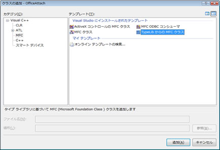

ソリューションエクスプローラーからクラスの作成を実行する
[クラスの追加]で[MFC]-[TypeLibraryからのMFCクラス]を選択し、[追加ボタン]を押す
3. クラスを追加する
①タイプライブラリを選択する ②インターフェイスを選択する ③生成ボタンを押す ④クラス名を変更する(※ダブりやすい名前のため必須) ⑤ヘッダ名を変更する(※ダブりやすい名前のため必須) ⑥完了ボタンを押す
ヘッダファイルから#import行を削除する
※VS2005以降、コンパイルでエラーがでるため
// [Typelib クラス追加ウィザード] で作成された IDispatch ラッパー クラスを生成しました。
// #import C:\\Program Files\\Microsoft Office\\Office12\\EXCEL.EXE no_namespace
// CExcelApp ラッパー クラス
#pragma once
class CExcelApp : public COleDispatchDriver
{
public:
CExcelApp(){} // COleDispatchDriver 既定のコンストラクタを呼び出します。
CExcelApp(LPDISPATCH pDispatch) : COleDispatchDriver(pDispatch) {}